Lecture 05: GPUs
TL;DR - GPUs are massively parallel processors optimized for throughput, not latency, by having many simple compute units (SMs) orchestrated by minimal control logic. - Compute (especially matrix multiplication) has scaled much faster than memory bandwidth, making memory access the primary bottleneck for modern ML workloads. - Optimizing GPU performance requires careful management of the memory hierarchy, leveraging fast on-chip memory (shared memory, registers) and minimizing slow global memory (DRAM) access. - Key techniques for optimizing GPU performance include: reducing memory accesses (coalescing, fusion, tiling), trading compute for memory (quantization, recomputation), and aligning data access patterns with hardware specifics (bursts, tile divisibility). - Flash Attention (and Flash Attention 2) dramatically accelerates attention by applying these low-level GPU optimization techniques, particularly online softmax computation and recomputation, to reduce HBM accesses.
Key Concepts - GPU Architecture (SMs, SPs, Tensor Cores) - CPU vs. GPU Design Goals (Latency vs. Throughput) - Memory Hierarchy (Registers, Shared Memory, L1/L2 Cache, Global Memory/HBM) - Execution Model (SIMT, Warps, Blocks, Threads) - Dennard Scaling vs. Parallel Scaling - Roofline Model (Compute-bound vs. Memory-bound) - GPU Optimization Techniques: - Control Divergence - Low Precision Computation (Quantization) - Operator Fusion - Recomputation - Memory Coalescing - Tiling - Flash Attention
[0:00] Introduction and Course Updates
- Assignment 1 is due tonight. Extensions are available upon request.
- Assignment 2 will be released soon, focusing on implementing parts of Flash Attention 2.
[0:05] Outline and Goals
- Goal 1: Make CUDA and GPUs less magical.
- Understand why GPUs can be slow and exhibit mysterious performance patterns (e.g., wave-like patterns in matrix multiplication throughput).
- Understand the underlying hardware and execution model.
- Goal 2: Understand how to make fast algorithms.
- Learn the primitives and components needed to accelerate algorithms like Flash Attention.
- Feel comfortable accelerating new architectures with CUDA.
[0:27] Why GPUs Seem Mysterious
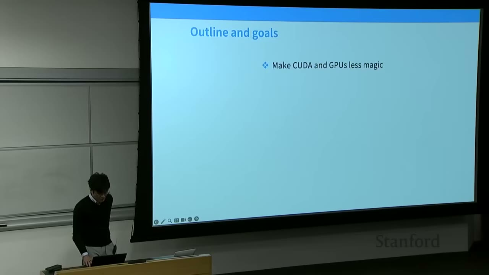
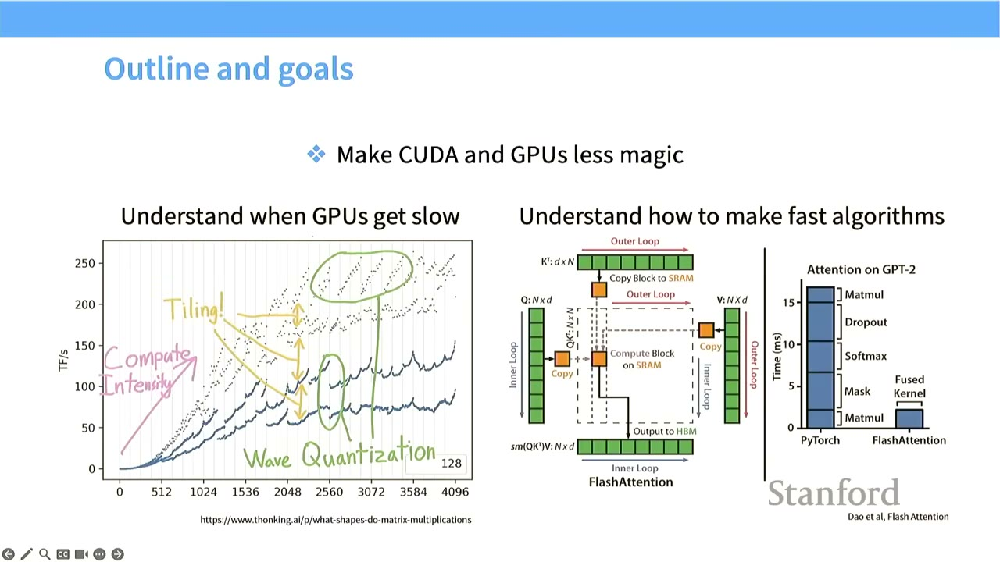
- GPUs can show unpredictable performance. For example, when increasing matrix multiply sizes, throughput (TFlops/s) doesn't scale smoothly but shows wave-like patterns.
- We will explore concepts like tiling, compute intensity, and wave quantization to demystify these behaviors.
[2:11] Acknowledgements
- Substantial credit to resources like Horace He's blog, CUDA Mode group, and the TPU book from Google. These resources offer deeper dives into GPU and hardware specifics.
[2:44] Organization of Today's Lecture
- GPUs in depth: How they work and important parts.
- Understanding GPU performance: What makes GPUs fast or slow.
- Putting it together: Unpacking Flash Attention.
[3:35] Setting the Stage: Compute Leads to Predictable Performance
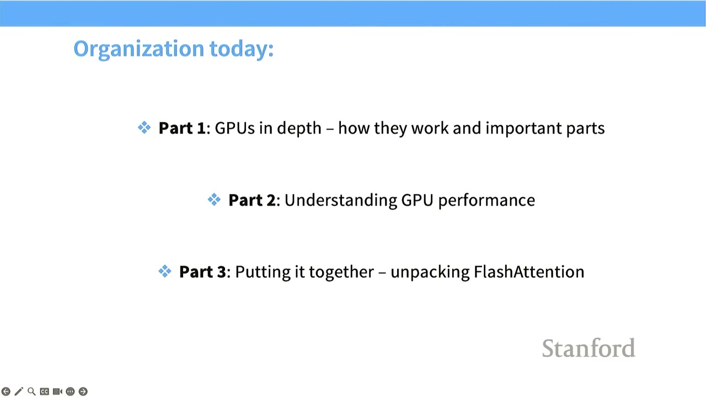
- Compute is critical for Language Models: More compute allows for processing more data, training larger models, and ultimately leads to improved performance.
- Performance drivers: Faster hardware, better utilization, and improved parallelization are key.
[4:20] How We Get Compute Scaling: Early On - Dennard Scaling
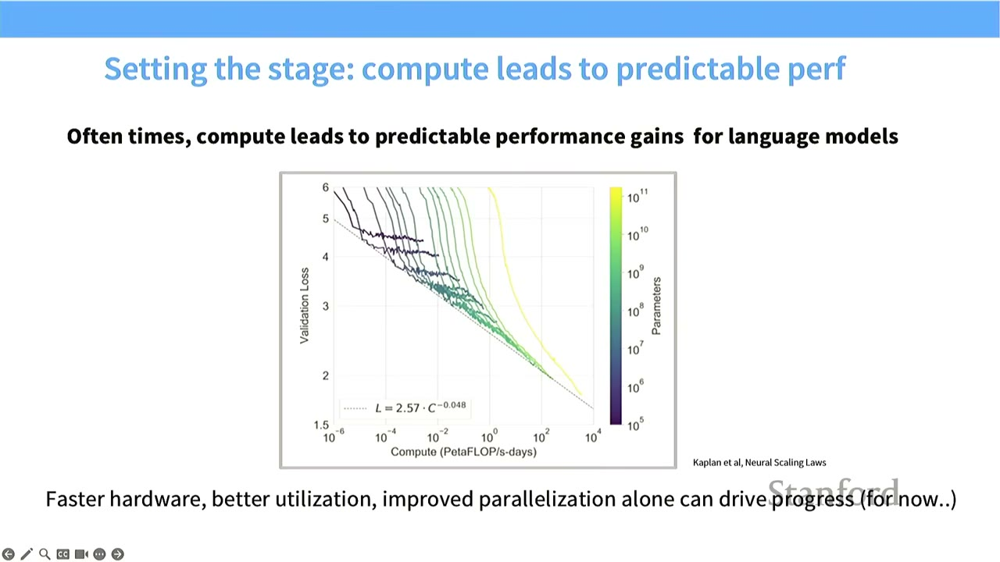
- Dennard Scaling (1980s-2000s): In the early days of semiconductor scaling, CPUs got faster by packing more transistors onto a chip (Moore's Law). Smaller transistors could run at higher clock speeds with lower power, leading to increased single-thread performance.
- End of Dennard Scaling: Around the 2000s, single-thread performance started to taper off (blue dots in the chart). While transistor counts continued to increase, this no longer translated to proportional gains in single-thread throughput.
[5:30] Parallel Scaling Continues
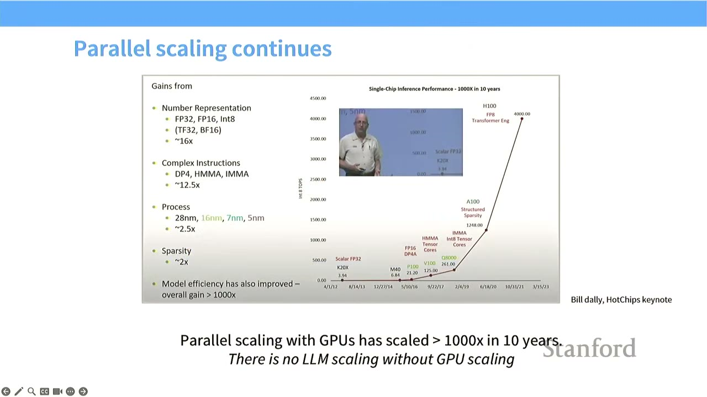
- Shift to Parallel Scaling: The story of scaling for deep learning and neural networks moved from single-thread scaling (doing computation faster in absolute terms) to parallel scaling (performing many workloads simultaneously).
- GPU Performance Growth: GPUs have shown super-exponential growth in integer operations per second (INT8 TOPS), as illustrated by Bill Dally's keynote chart. This growth is driven by:
- Number Representation: Moving from FP32 to FP16, BF16, and INT8 (up to 16x gain).
- Complex Instructions: Introducing specialized instructions like DP4, HMMA, IMMA (up to 12.5x gain).
- Process: Smaller manufacturing processes (28nm down to 5nm) (up to 2.5x gain).
- Sparsity: Leveraging sparsity in models (up to 2x gain).
- Model Efficiency: Overall gains exceeding 1000x.
- To achieve high performance in language models, we must understand and leverage this parallel scaling.
[6:22] How is a GPU Different from a CPU?
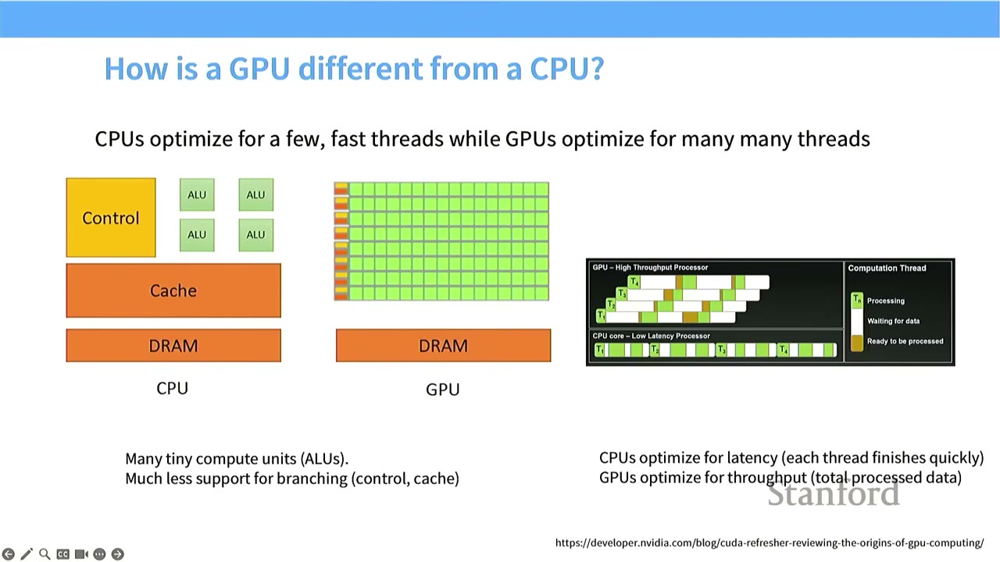
- CPU Design: Optimized for latency (finish tasks quickly).
- Features: Large control units, complex branch prediction, large caches.
- Goal: Execute a few threads very fast.
- GPU Design: Optimized for throughput (process total data quickly).
- Features: Many tiny compute units (ALUs), much less support for branching/control.
- Goal: Execute many threads in parallel.
- Visual Analogy:
- CPU: A few powerful workers (ALUs) with a sophisticated manager (Control) and fast local storage (Cache). Each worker processes a task to completion as fast as possible.
- GPU: Many simple workers (ALUs) with minimal management (Control). Tasks are processed in parallel, with the goal of maximizing the total amount of work done over time, even if individual tasks take longer.
[8:28] Anatomy of a GPU (Execution Units)
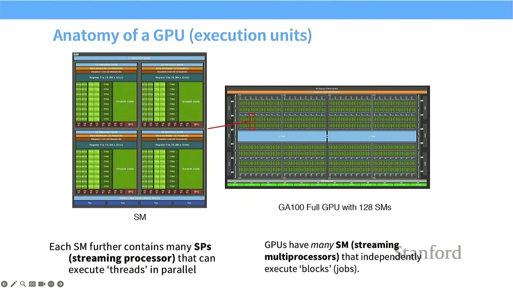
- Streaming Multiprocessor (SM): The atomic unit of execution on a GPU. GPUs have many SMs (e.g., GA100 Full GPU with 128 SMs). SMs can independently execute "blocks" (jobs).
- Streaming Processor (SP): Each SM contains many SPs. SPs execute "threads" in parallel.
- Execution Model:
- An SM has control logic and can decide what to execute (e.g., branching).
- SPs within an SM take the same instruction and apply it to many different pieces of data (Single Instruction, Multiple Threads - SIMT). This allows for massive parallel computation.
[9:57] Anatomy of a GPU (Memory)
- Memory Hierarchy is Crucial: The closer memory is to the SM, the faster it is. Physical proximity matters significantly for performance.
- Memory Types and Latencies (approximate clock cycles):
- Registers / Shared Memory (L1 cache): Inside the SM, very fast (20-33 cycles).
- L2 Cache: On-die (on the GPU chip), still relatively fast (200 cycles).
- Global Memory (HBM/DRAM): Off-chip, slowest (290 cycles).
- Impact of Slow Memory: If a computation requires frequent access to global memory, the SMs might run out of work and sit idle, leading to poor utilization. This is a key theme in GPU optimization.
[10:05] Is this GPU the same as that GPU?
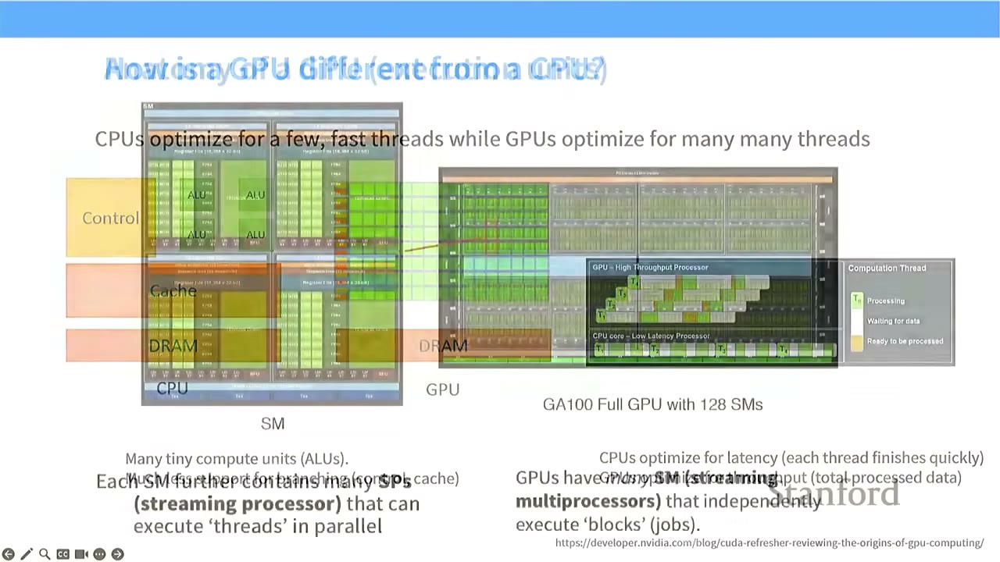
- The previous diagram was a cartoon version. The detailed diagram shows SMs (green blocks) with their own control units and specialized processing units (like FP32, INT32, Tensor Cores).
- HBM (High Bandwidth Memory) connectors (yellow) are visible on the chip diagram, connecting to off-chip DRAM.
[13:15] Execution Model of a GPU
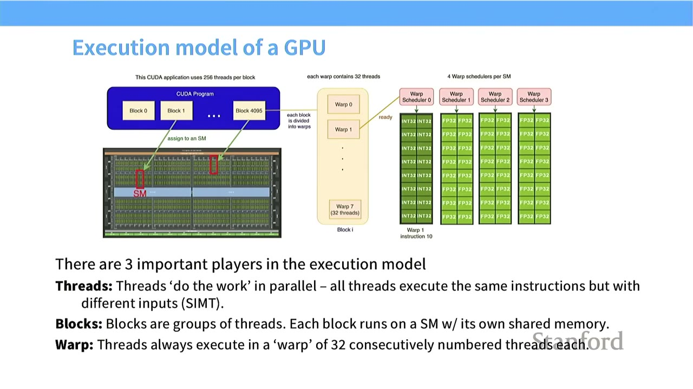
- Three important players:
- Threads: "Do the work" in parallel. All threads execute the same instructions but with different inputs (SIMT).
- Blocks: Groups of threads. Each block runs on an SM with its own shared memory.
- Warp: Threads always execute in a "warp" of 32 consecutively numbered threads each.
- Process:
- A CUDA program launches many blocks.
- Each block is assigned to an SM.
- Within an SM, a block is divided into warps.
- Each warp (32 threads) is scheduled by a Warp Scheduler to run on the SM's SPs.
- All threads in a warp execute the same instruction on different data.
[15:04] Memory Model of a GPU
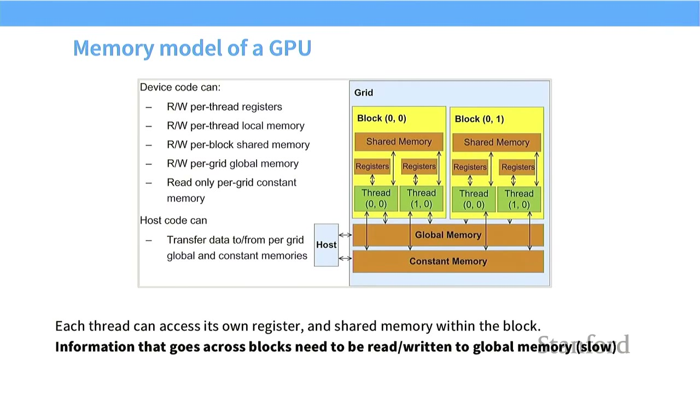
- Device Code (GPU) can access:
- Read/Write per-thread registers (fastest)
- Read/Write per-thread local memory
- Read/Write per-block shared memory
- Read/Write per-grid global memory (slowest)
- Read only per-grid constant memory
- Host Code (CPU) can:
- Transfer data to/from per-grid global and constant memories.
- Key Principle: Each thread can access its own register and shared memory within the block. Information that goes across blocks needs to be written to global memory.
- Implication: Accessing global memory is very slow. Ideally, threads should operate on small amounts of data loaded into fast shared memory.
[16:34] Side Thread - What about TPUs?
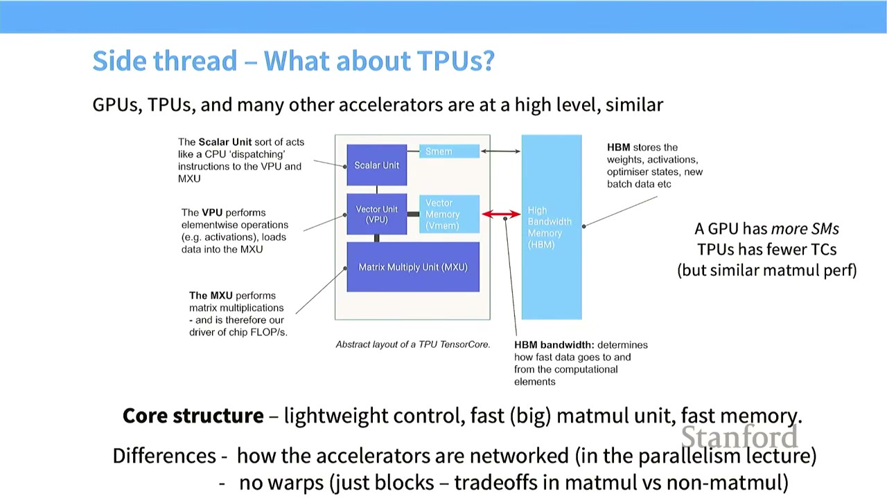
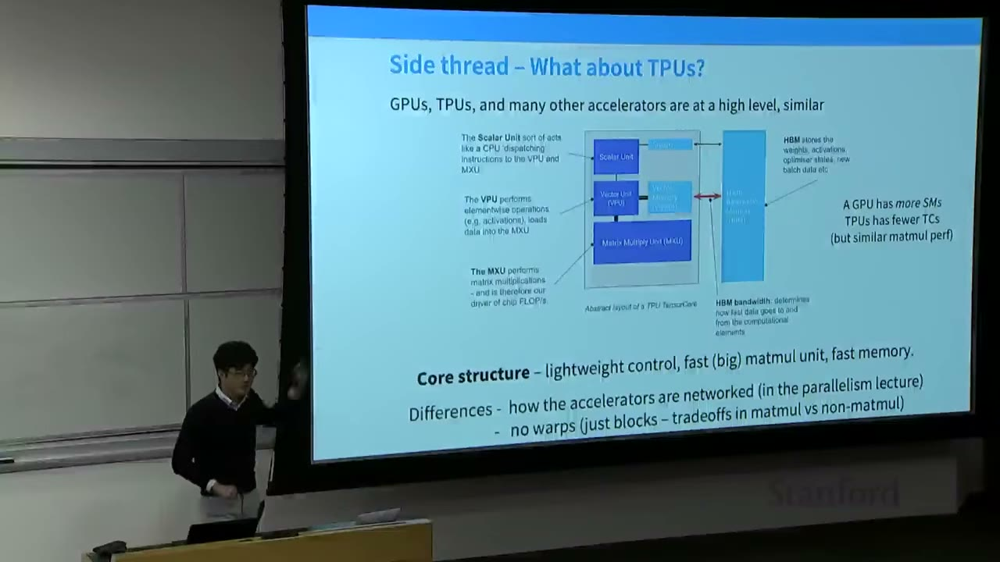
- TPUs (Tensor Processing Units): Google's custom ASICs for ML.
- High-level Similarity to GPUs: TPUs, GPUs, and many other accelerators share a similar high-level structure.
- Tensor Core (analogous to SM): An atomic unit that operates on data.
- Scalar Unit: Control unit, dispatches instructions.
- Vector Unit (VPU): Performs element-wise operations on vectors.
- Matrix Multiply Unit (MXU): Dedicated hardware for matrix multiplications.
- Memory: Fast on-core memory (Vector Memory, SMEM) and High Bandwidth Memory (HBM) off-core.
- Core Structure: Lightweight control, fast (big) matrix multiply, fast memory.
- Differences:
- TPUs have fewer Tensor Cores (TCs) than GPUs have SMs, but individual TCs are more powerful.
- TPUs have no concept of "warps" or "blocks" in the same way as GPUs. They are optimized purely for matrix multiplications, making them simpler.
- The networking of accelerators is different (covered in a later lecture).
[19:15] Strengths of the GPU Model
- Easily scales up hard workloads: By adding more SMs, performance can be increased without necessarily increasing clock speed or dealing with heat dissipation issues.
- Easy (?) to program due to the SIMT model: The Single Instruction, Multiple Threads (SIMT) model, where all threads in a warp execute the same instruction on different data, is conceptually straightforward for parallelizing operations on matrices.
- Threads are "lightweight": GPU threads have minimal state and can be stopped and started quickly. This allows the GPU to hide latency by switching between active threads, ensuring high utilization even when some threads are waiting for data.
[20:18] GPUs as Fast Matrix Multipliers
- Early Days: GPUs (Graphics Processing Units) were initially designed for graphics. Researchers "hacked" programmable shaders to perform matrix multiplications.
- Modern Hardware: NVIDIA and other manufacturers realized the importance of matrix multiplications for deep learning.
- Tensor Cores: Introduced in the V (Volta) and T (Turing) series, Tensor Cores are specialized matrix multiplication circuits.
- Performance Gap: Matmuls are now >10x faster than other floating-point operations on GPUs.
- Implication: If you're designing a neural architecture, most of your workload should be matrix multiplications to leverage this specialized hardware. Non-matmul based operations will be significantly slower.
[22:03] Compute Scaling is Faster than Memory Scaling
- Relative Scaling:
- HW FLOPs (Compute): Scales incredibly fast (60,000x in 20 years, ~3.0x every 2 years).
- DRAM BW (Memory): Scales much slower (100x in 20 years, ~1.2x every 2 years).
- Interconnect BW (Host-GPU): Scales even slower (20x in 20 years, ~1.1x every 2 years).
- Memory Bottleneck: While early ML problems might have been compute-bound, modern GPUs are so fast that memory access (DRAM bandwidth) is now the primary bottleneck. This gap will continue to widen.
- Design Implication: Hardware-efficient algorithms must prioritize minimizing memory movement.
[23:55] Recap: GPUs - What are they and how do they work?
- GPUs are massively parallel processors: Same instructions applied across many workers (SMs).
- Compute (especially matmuls) has scaled faster than memory.
- We must respect the memory hierarchy to make things go fast.
[25:02] Part 2: Making ML Workloads Fast on a GPU
- The Matrix Multiply Mystery Plot: The initial plot showed unpredictable, wave-like performance patterns for square matrix multiplications as size increases. We aim to understand these patterns.
- X-axis: Size of square matrix (N).
- Y-axis: Throughput (TFlops/s), representing hardware utilization.
- Observed Patterns: Multiple lines, wave-like behavior, sudden drops/increases.
[26:21] What Makes ML Workloads Fast? The Roofline Model
- Roofline Model: A performance model that identifies whether a workload is compute-bound or memory-bound.
- Memory-limited regime (left side): Performance is limited by the rate at which data can be fetched from memory.
- Throughput-limited / Compute-bound regime (right side): Performance is limited by the raw processing power of the compute units.
- Goal: Avoid being memory-bound and operate in the compute-bound regime (fully utilizing compute units).
- The mystery plot's general shape (diagonal then flat) is consistent with the roofline model.
[27:36] How Do We Make GPUs Go Fast? (Tricks)
- To avoid memory bottlenecks, we need a large array of tricks.
-
1. Control Divergence (not a memory bottleneck):
- SIMT Model: Every thread in a warp executes the same instruction.
- Conditionals (if/else statements): If threads within a warp take different branches, the GPU must execute both branches sequentially, pausing threads that don't follow the current path. This leads to significant overhead.
- Implication: Avoid conditional statements within warps in performance-critical code.
-
2. Low Precision Computation (Quantization):
- Gains: Moving from FP32 to FP16, BF16, or INT8 can yield many orders of magnitude performance gains (e.g., 16x for FP32 to INT8).
- Reason: Fewer bits mean fewer bits to move. This effectively increases memory bandwidth for free.
- Example (Element-wise ReLU):
- FP32: 1 read, 1 write (if x < 0), 1 comparison, 1 FLOP. Memory access: 8 bytes. Intensity: 8 bytes/FLOP.
- FP16: 1 read, 1 write (if x < 0), 1 comparison, 1 FLOP. Memory access: 4 bytes. Intensity: 4 bytes/FLOP.
- Result: Halving memory access effectively doubles memory bandwidth.
- Tensor Cores: Modern GPUs (like NVIDIA's Tensor Cores) are designed for mixed precision. Inputs can be 16-bit, intermediate accumulations can be 32-bit for precision, and the final result can be downcast to 16-bit.
- Careful Engineering: Not all parts of a network or training algorithm can be low precision. Operations needing high precision (e.g., sums, reductions) or high dynamic range (e.g., exponential functions) might need FP32 or BF16.
-
3. Operator Fusion:
- Problem: Naive execution of sequential operations (e.g., square -> triangle -> circle) involves repeatedly writing intermediate results to global memory and reading them back. This incurs significant memory overhead.
- Solution (Fused Kernel): Combine multiple sequential operations into a single CUDA kernel. The intermediate results stay in fast on-chip memory (registers, shared memory) and are not written back to global memory until the final output.
- Example (sin^2(x) + cos^2(x)): Naive implementation launches 5 separate CUDA kernels, each involving global memory access. A fused kernel performs all operations on-chip, dramatically reducing memory traffic.
- Automation: "Easy" fusions can be done automatically by compilers like
torch.compile.
-
4. Recomputation:
- Problem (Backpropagation): During backpropagation, activations from the forward pass are needed to compute gradients. Storing all activations can consume significant memory and lead to slow global memory accesses.
- Solution: Instead of storing all activations, recompute them on the fly during the backward pass.
- Example (Stacked Sigmoids):
- Normal Forward Pass: 1 memory read (x), 3 memory writes (S1, S2, out).
- Normal Backward Pass: 3 memory reads (S1, S2, dout), 1 memory write (dx). Total 8 memory accesses.
- Recomputed Forward Pass: 1 memory read (x), 1 memory write (out). S1 and S2 are not stored.
- Recomputed Backward Pass: 2 memory reads (x, dout). S1 and S2 are recomputed on-chip. 1 memory write (dx). Total 5 memory accesses.
- Trade-off: Recomputation increases compute but significantly reduces memory accesses. This is beneficial when compute is abundant and memory bandwidth is scarce.
- Relation to Checkpointing: Similar to gradient checkpointing, but here the goal is execution speed rather than just memory savings.
-
5. Memory Coalescing and DRAM:
- DRAM Burst Mode: When reading from global memory (DRAM), the hardware doesn't return just the requested byte, but a whole "burst section" (e.g., 4 bytes, 16 bytes, 128 bytes) for free. This is because moving data to the sense amplifier is the slow step; once there, many bytes can be read quickly.
- Coalesced Accesses: Memory accesses are "coalesced" if all threads in a warp access locations that fall within the same burst section. This allows the GPU to fetch multiple data points with a single, efficient DRAM read.
- Impact on Matrix Multiplication:
- Row-major access (not coalesced): If threads move along rows (e.g., Thread 0 reads M0,0, Thread 1 reads M0,1), their memory accesses might fall into different burst sections, leading to many inefficient DRAM reads.
- Column-major access (coalesced): If threads move down columns (e.g., Thread 0 reads M0,0, Thread 1 reads M1,0), their memory accesses are more likely to fall within the same burst section, allowing for coalesced reads and higher throughput.
- Importance: Correct memory traversal order is crucial for performance. Misaligned access patterns can drastically slow down memory access.
-
6. Tiling (The Big One):
- Idea: Grouping and ordering threads to minimize global memory access.
- Process:
- Cut large matrices into smaller "tiles."
- Load a tile from global memory into fast shared memory.
- Perform all necessary computations on that tile within shared memory.
- Write the final result back to global memory (or accumulate if possible).
- Repeat for the next tile.
- Advantages:
- Reduced Global Memory Access: Each input is read $N/T$ times from global memory (where $N$ is matrix size, $T$ is tile size), and $T$ times within shared memory. This is a factor of $T$ reduction in global memory access.
- Repeated Reads Now Shared: Data within a tile is loaded once and reused by multiple threads, reducing redundant global memory reads.
- Memory Access Can Be Coalesced: Within a tile, access patterns can be optimized for coalescing.
- Complexities:
- Tile Size Selection: Factors affecting optimal tile size include coalesced memory access, shared memory size, and divisibility of the matrix dimensions.
- Divisibility Issues: If matrix dimensions are not perfectly divisible by tile sizes, some tiles will be very sparse, leading to underutilized SMs and reduced overall performance. This requires careful padding.
- Memory Alignment: Tiles must align with burst sections in DRAM for fast loading. Misalignment can double memory accesses.
[1:10:50] Putting it all together: The Forward Pass of Flash Attention
- Matrix Multiply Mystery Revisited: The wave-like patterns in matrix multiply performance are due to the complex interplay of compute intensity, tiling, and wave quantization (burst mode alignment).
- Andrej Karpathy's Tweet: Highlights how a seemingly small change in vocabulary size (50257 to 50304, nearest multiple of 64) can lead to a 25% speedup in nanoGPT, due to better memory alignment and higher occupancy. This illustrates the importance of low-level details.
[1:11:10] Flash Attention: How it Dramatically Accelerates Attention
- Standard Attention Computation: Involves three matrix multiplies (Q, K, V) and a softmax operation.
- The Challenge of Softmax: Softmax is a global operation, requiring summing the entire row of attention scores. This is problematic for tiling, as it breaks the locality needed to keep computations within tiles.
- Online Softmax (from Mikailov and Gimelshein 2018):
- Normal Softmax: Requires all values (x1 to xn) upfront to compute the maximum and sum for normalization.
- Online Softmax: Allows incremental computation of the softmax. It maintains a running maximum and a telescoping sum.
- Key Idea: You don't need all x1 to xn upfront. You can process a stream of values, incrementally updating the max and sum.
- Benefit: This allows computing the softmax tile-by-tile.
- Flash Attention's Forward Pass (from Dao 2023):
- Tile-wise computation of the inner products (S): The QK^T matrix multiply is tiled, as discussed.
- Fusion of the exponential operator: The exponential function (part of softmax) is fused with the inner product computation.
- Tile-wise computation of the softmax via the online, telescoping sum trick: This is the crucial part. By using the online softmax, Flash Attention can compute the softmax within each tile, incrementally updating the necessary components (max and sum) without needing to materialize the full N^2 attention matrix.
- Output: Once all tiles are processed, the final output is computed by combining the partial results.
- Backward Pass: Flash Attention uses recomputation tile-by-tile for the backward pass to avoid storing the N^2 attention matrix, which would be too memory-intensive.
[1:12:54] Recap for the Whole Lecture
- Hardware Power: Hardware scales, and low-level details determine what scales or doesn't.
- Current GPU Compute: Strongly encourages compute based on matrix multiplication and efficient data movement.
- Thinking Carefully about the GPU: Coalescing, tiling, and fusion are key techniques that lead to good performance on things like Flash Attention.
Practical Takeaways - Memory is King: For modern ML on GPUs, memory bandwidth is often the bottleneck, not raw FLOPs. Prioritize minimizing global memory access. - Embrace Low-Level Optimizations: Techniques like tiling, fusion, coalescing, and recomputation are not just academic exercises; they are essential for achieving high performance. - Understand the Memory Hierarchy: Design algorithms to keep data in the fastest available memory (registers, shared memory) as much as possible. - Be Mindful of Data Access Patterns: Optimize memory access patterns to leverage hardware features like burst mode and avoid control divergence. - Leverage Low Precision: Use FP16, BF16, or INT8 where possible to reduce memory traffic and increase effective bandwidth.
Open Questions / Things to Remember
- How do different GPU architectures (e.g., NVIDIA vs. AMD vs. Intel) impact the optimal values for tiling sizes, burst sections, and other low-level parameters?
- What are the practical implications of these low-level optimizations for researchers who primarily use high-level frameworks like PyTorch or TensorFlow? (e.g., how much can compilers like torch.compile automate?)
- How do these principles extend to multi-GPU and distributed training scenarios?
- What are the trade-offs between numerical stability and performance when using mixed precision and quantization?